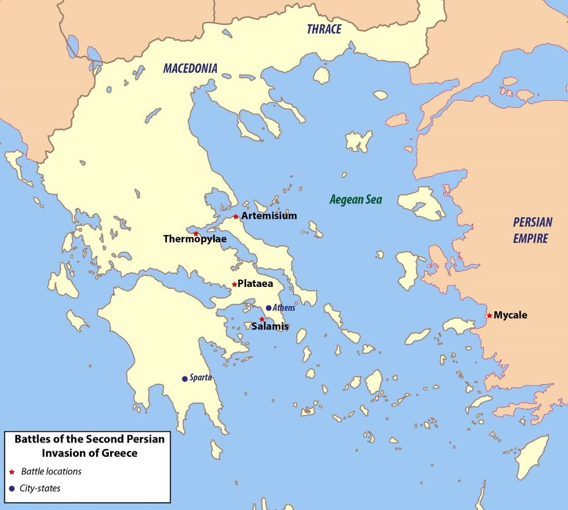
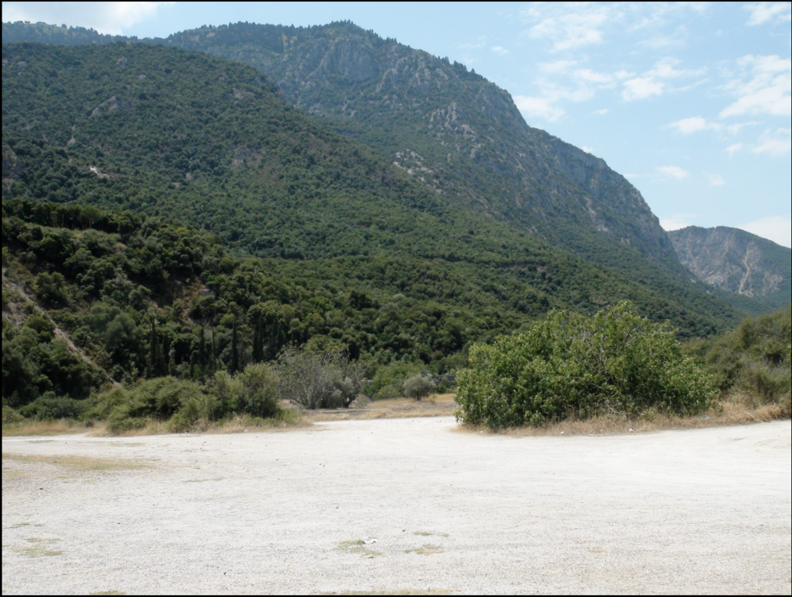
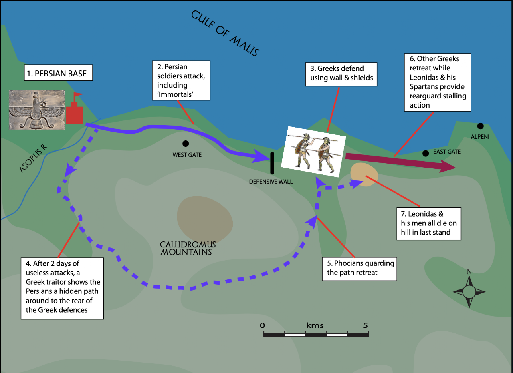
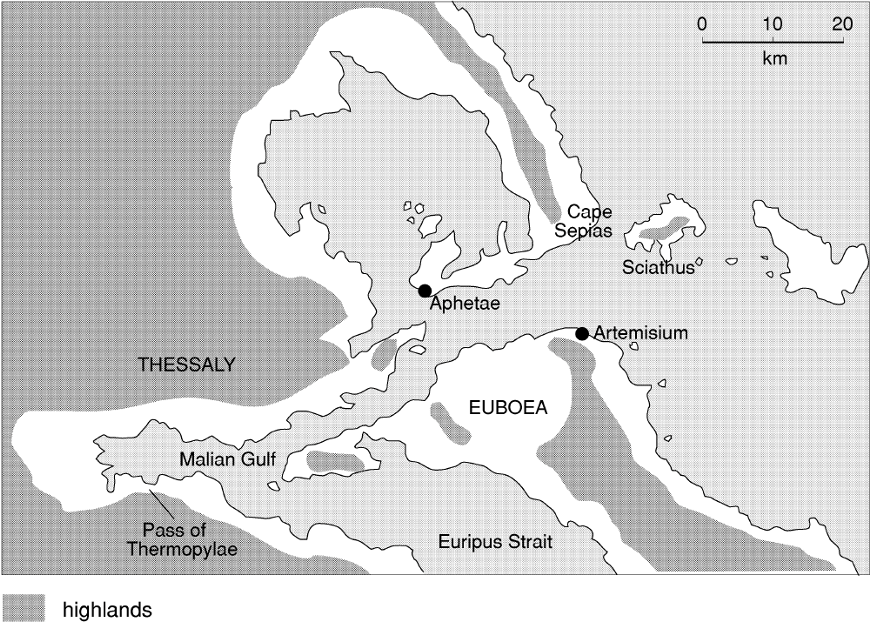
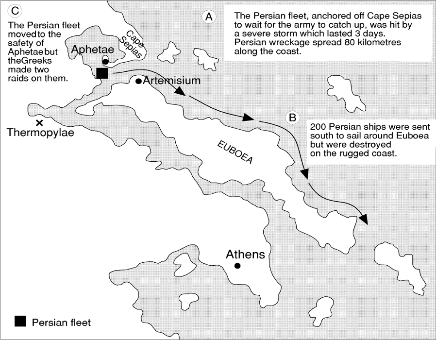
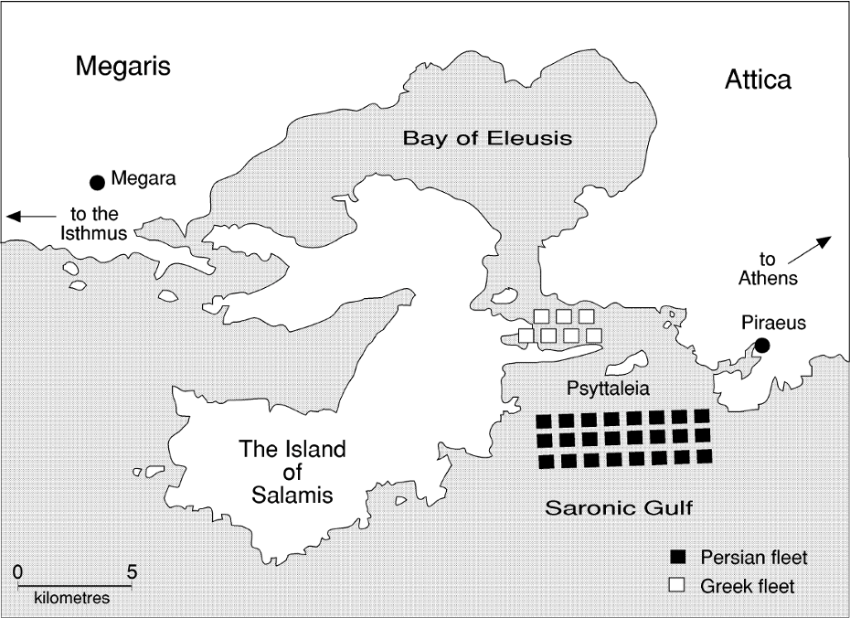
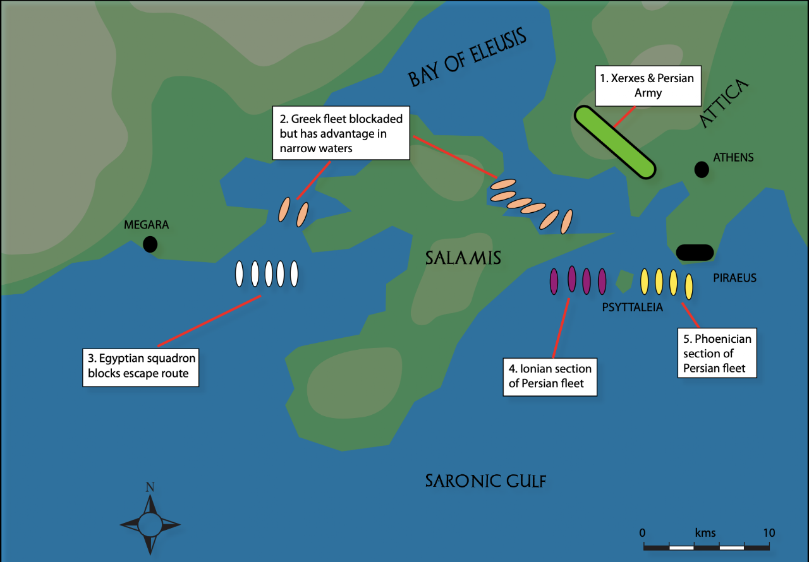
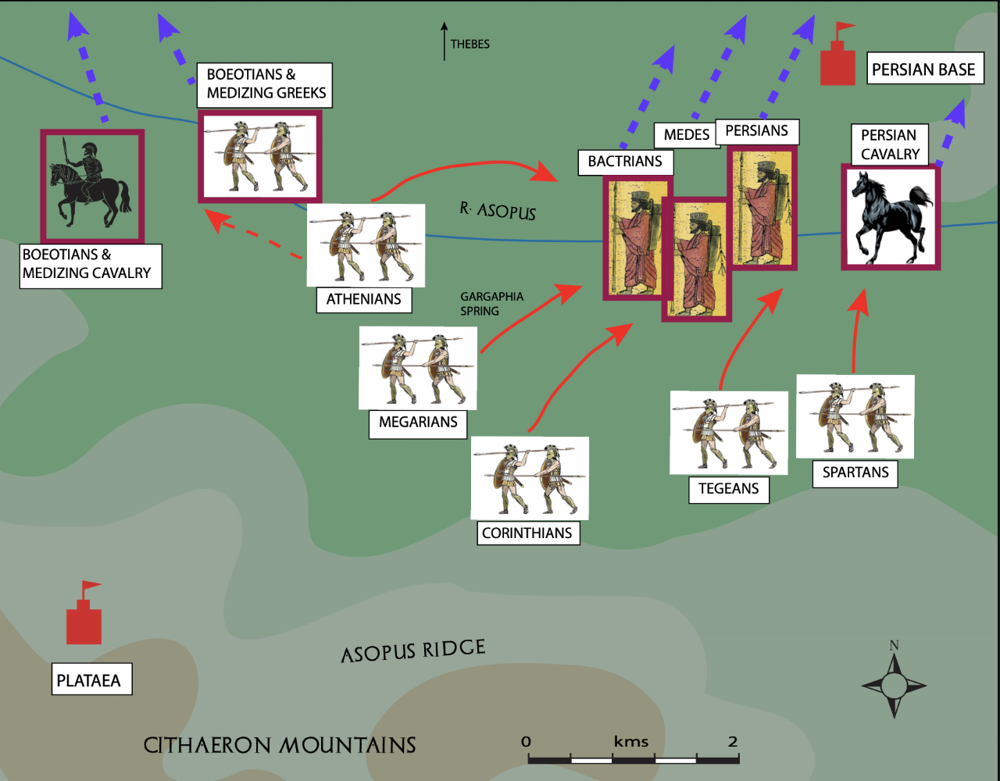
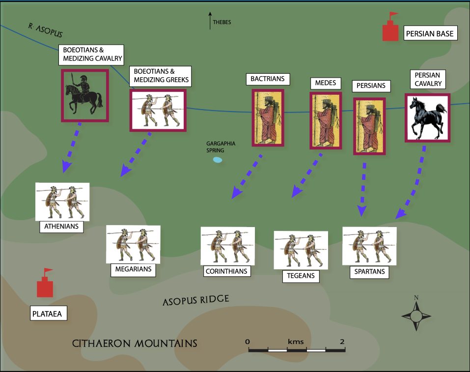
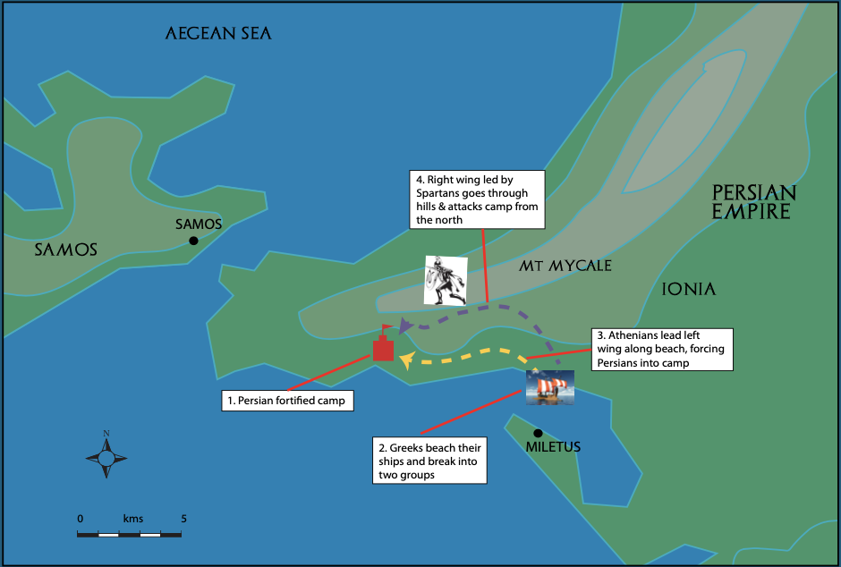

The Second Invasion
Thermopylae, Artemisium, Salamis, Plataea, and Mycale (480–479 BC)
Overview
In 480 BC, Xerxes led Persian forces into Greece by land and sea. Five major battles occurred: Thermopylae, Artemisium, Salamis, Plataea, and Mycale.

Battle of Thermopylae
Decisive Battles — Thermopylae (Greece vs Persia) — Zakerias Rowland-Jones
Video summary
Documentary reconstruction of the Battle of Thermopylae, Leonidas' stand with the 300 Spartans, and its strategic significance.

Themistocles believed that if the Greeks were clever in their choice of battle sites, they stood a better chance against the massive Persian forces. The Pass at Thermopylae was chosen because:
- Central Greece could be defended with a relatively small force of soldiers
- The corridor between the mountains and the sea was about 1.5 kilometres long and in places just the width of a single cart-track
- Midway along the pass was an ancient wall which, if repaired, would provide protection for the Greek forces
- At the southern end was a village which the Greeks could use as a supply base
Leonidas, the Spartan king, marched to Thermopylae with an advance force of approximately 7,000 hoplites of which 300 were Spartan. They formed the core of this predominantly Peloponnesian force. As well as the Peloponnesians there were Thebans, Thespians, Phocians and Locrians. Leonidas had insisted on having Theban troops with him because he did not trust their loyalty to the Greek cause.
He made the village of Alpenoi his base of operations and then took up a position with his troops near an ancient wall which they rebuilt. The 1,000 Phocian troops volunteered to guard the mountain path, since they were familiar with the area.
Herodotus records Xerxes' disbelief when he heard that a small number of Greeks outside the wall "were stripped for exercise while others were combing their hair." He sent for Demaratus, the ex-king of Sparta, who said:
"These men have come to fight us for possession of the pass, and for that struggle they are preparing. It is common practice of the Spartans to pay careful attention to their hair when they are about to risk their lives. You have now to deal with the finest kingdom in Greece, and the bravest men."
— Herodotus, Book VII, 209
After four days of waiting, Xerxes was furious. On the fifth day he ordered his troops to take the Greeks alive.
For two days Xerxes made an all-out frontal attack. Herodotus records:
"The Medes charged, and in the struggle which ensued many fell; but others took their places, and in spite of terrible losses refused to be beaten off... All day the battle continued; the Medes, after their rough handling, were at length withdrawn and their place was taken by Hydarnes and his picked Persian troops — the King's Immortals — who advanced to the attack in full confidence of bringing the business to a quick and easy end. But, once engaged, they were no more successful than the Medes had been..."
"On the Spartan side it was a memorable fight; they were men who understood war pitted against an inexperienced enemy, and amongst the feints they employed was to turn their backs in a body and pretend to be retreating in confusion, whereupon the enemy would pursue them with a great clatter and roar; but the Spartans, just as the Persians were on them, would wheel and face them and inflict in the new struggle innumerable casualties."
— Herodotus, The Histories, Book VII, 208–14

Xerxes learned of an alternative mountain route from Ephialtes, a local Greek seeking reward. He ordered Hydarnes and the Immortals to march through the night to encircle the Greek position.
Leonidas realised his predicament when deserters from the Persian army filtered into his camp during the night, and lookouts came rushing in at dawn with news that the Persians were moving down the mountain path.
Knowing they were about to be encircled, Leonidas dismissed most of the troops. Because of the strict Spartan code of honour, it was unthinkable that the Spartans should desert their post. The 300 Spartan hoplites remained. Only the Thespians volunteered to stay; the Thebans were forced to remain as hostages.
Herodotus describes the final stand:
"Many of the invaders fell; behind them the company commanders plied their whips indiscriminately, driving the men on. Many fell into the sea and were drowned, and still more were trampled to death by their friends. No one could count the number of the dead. The Greeks, who knew that the enemy were on their way round by the mountain track and that death was inevitable, put forth all their strength and fought with fury and desperation. By this time most of their spears were broken, and they were killing Persians with their swords.
In the course of that fight, Leonidas fell, having fought most gallantly, and many distinguished Spartans with him... There was a bitter struggle over the body of Leonidas; four times the Greeks drove the enemy off... Here they resisted to the last, with their swords, if they had them, and, if not, with their hands and teeth, until the Persians, coming on from the front over the ruins of the wall and closing in from behind, finally overwhelmed them with missile weapons."
— Herodotus, The Histories, VII, 221–27
Xerxes ordered Leonidas' head cut off and fixed on a stake.
Leonidas and his small force deserved to be honoured as military heroes despite their failure. Their rear-guard action prevented the Persians from overtaking the retreating forces. The memorial inscription read:
Go tell the Spartans, you who read: We took their orders and are dead.
Battle of Artemisium

Even before direct contact, the Persian fleet suffered serious setbacks:
"The Persian fleet... made the Magnesian coast between Casthanea and Cape Sepias... suddenly changed, and the fleet was caught in a heavy blow from the east... Four hundred ships, at the lowest estimate, are said to have been lost in this disaster and the loss of life and treasure was beyond reckoning."
— Herodotus, The Histories, Book VII, 188–89
The Persians detached a squadron of 200 ships to sail around Euboea, hoping to catch the Greeks in a trap. However, this squadron was devastated by storms — "every ship, empowered and forced to run blind before it, piled up on the rocks."
The Greeks formed a defensive circle, bows outward, sterns to the centre. They captured thirty Persian ships in the first encounter. After dark, a violent rainstorm struck:
"Dead bodies and bits of wreckage, drifting up to Aphetae, fell athwart the bows of the ships which lay there, and fouled the oar blades of all that were under way."
— Herodotus
The main battle was fought on the same day as Thermopylae. The Persians "fought bravely to avoid the disgrace of defeat by so small an enemy force." Greek losses both in ships and men were heavy; those of the Persians much heavier. Neither side gained the upper hand.

As the Persians approached Delphi, Herodotus tells us that the god intervened to save the temple: “The barbarians had just reached in their advance the chapel of Minerva Pronaia, when a storm of thunder burst suddenly over their heads — at the same time two crags split off from Mount Parnassus, and rolled down upon them with a loud noise, crushing vast numbers beneath their weight — while from the temple of Minerva there went up the war-cry and the shout of victory.” Herodotus, Book VIII, 37
Greek Withdrawal
Themistocles suggested lighting fires to deceive the Persians, then sailing south under cover of darkness. News of Thermopylae's defeat accelerated the withdrawal.
As they withdrew, Themistocles carved messages along the Euboeic Channel:
"Men of Ionia... it is wrong that you should make war upon your fathers and help bring Greeks into subjection. The best thing you can do is to join our side; if this is impossible, you might at least remain neutral..."
— Herodotus, The Histories, Book VIII, 22
The losses at Artemisium forced the Persians to rethink their naval strategy — they could no longer divide their fleet for raids on the Peloponnese and had to concentrate their efforts at one point only.
Battle of Salamis
Battle of Salamis 480 BC (Persian Invasion of Greece) DOCUMENTARY — Kings and Generals
Video summary
Documentary covering the naval Battle of Salamis (480 BC), Themistocles' strategy, and the decisive Greek naval victory.

After the evacuation of Athens, the Athenian ships joined the rest of the fleet at Salamis. The fleet was now larger than at Artemisium but still commanded by the Spartan Eurybiades.
The commanders held war councils debating whether to stay at Salamis or move closer to the army at the Isthmus. When news came that the Acropolis had been burnt, the Peloponnesians wanted to sail away immediately.
Themistocles argued for staying at Salamis:
"Now for my plan: it will bring, if you adopt it, the following advantages: first, we shall be fighting in narrow waters, and there, with our inferior numbers, we shall win, provided things go as we reasonably expect. Fighting in a confined space favours us but the open sea favours the enemy. Secondly, Salamis, where we have put our women and children, will be preserved..."
— Herodotus, The Histories, Book VIII, 57–62
When the argument continued, Themistocles issued a threat:
"In this war everything depends on the fleet. I beg you to take my advice; if you refuse, we will immediately put our families aboard and sail for Siris in Italy... Where will you be without the Athenian fleet? When you have lost it you will remember my words."
— Herodotus
Xerxes held his own conference. Most captains spoke in favour of battle, but the Carian queen Artemisia dared to disagree:
"Master... spare your ships and do not fight at sea... Have you not taken Athens, the main objective of the war? Is not the rest of Greece in your power?... If, on the other hand, you rush into a naval action, my fear is that the defeat of your fleet may involve the army too."
— Herodotus, The Histories, Book VIII, 68
Xerxes followed the majority. He took up a position on a cliff to watch the battle.
Themistocles devised a plan to: force the Greeks to remain at Salamis, divide the Persian fleet, and draw the Persians into a trap in the narrow straits.
Herodotus records:
"Themistocles... sent a man over in a boat to the Persian fleet... 'I am the bearer of a secret communication from the Athenian commander, who is a well-wisher to your king and hopes for a Persian victory. He has told me to report to you that the Greeks are afraid and fighting amongst themselves and are planning to slip away.'"
— Herodotus, The Histories, Book VIII, 74
The Persian commanders reacted by:
- Dividing their fleet into three squadrons — Egyptians, Phoenicians and Ionians
- Dispatching the Egyptian squadron to sail around Salamis to block the western exit
- Putting soldiers ashore on the small island of Psyttaleia
- Ordering the Ionians and Phoenicians to advance into the straits to block the eastern end
The Persian movements went on throughout the night. It was not until Aristides arrived by boat from Aegina that the Greeks learned they were surrounded. This was exactly what Themistocles had been waiting for. By the time the navies met:
- The Persians had been rowing all night and were extremely tired
- The Greek squadrons were already in position, hidden behind two promontories
- The Egyptian squadron was out of contact and took no part in the battle

The Phoenicians led the Persian fleet into the straits; the Ionians brought up the rear. As the ships passed through the one-kilometre-wide narrows, there was confusion. The Athenians faced the Phoenicians; Eurybiades and most squadrons lined up against the Ionians; the Aeginetans and Megarians struck at the Ionian flank.
Aeschylus, who fought at Salamis, describes the battle in The Persians:
"Then from the Hellene ships Rose like a song of joy the piercing battle-cry... 'Forward, you sons of Hellas! Set your country free! Set free your sons, your wives, tombs of your ancestors, And temples of your gods. All is at stake: now fight!'
At once ship into ship battered its brazen beak... But soon, in that narrow space, Our ships were jammed in hundreds; none could help another. They rammed each other with their prows of bronze... the sea was hidden, carpeted with wrecks And dead men; all the shores and reefs were full of dead... never before In one day died so vast a company of men."
— Aeschylus, The Persians, lines 393–468
Herodotus adds:
"The greater part of the Persian fleet suffered severely in the battle, the Athenians and the Aeginetans accounting for a great many of their ships. Since the Greek fleet worked together as a whole, while the Persians had lost formation and were no longer fighting on any plan, that was what was bound to happen... Most of the enemy, being unable to swim, were drowned."
"During the confused struggle a valuable service was performed by the Athenian Aristides... He took a number of the Athenian heavy infantry... across to Psyttaleia, where they killed every one of the Persian soldiers who had been landed there."
— Herodotus, The Histories, Book VIII, 85–97
Battle of Plataea
■ Actions by Mardonius ■ Actions/response from Athens ■ Events involving both Athens and Persia
When Mardonius withdrew to Thessaly for the winter, the Athenians straggled back to their ruined city. In 479 BC, Mardonius moved from Thessaly into Boeotia to prepare for another encounter with the Greek hoplites. He took up a position near the small town of Plataea.
Mardonius chose the area near Plataea because it was good cavalry country and close to Thebes, which had gone over to the Persians. The Persian troops built a huge stockade about 900 acres in area along the river.
The Greeks descended from the Cithaeron ranges and took up positions in the lower foothills. The Spartans were on the right wing and the Athenians on the left. Mardonius sent his cavalry under Masistius across the river to harass the Greeks. In the fighting, Masistius was killed and the cavalry retreated. As a morale booster, the Greek commanders paraded his body along their lines.

Pausanias moved his troops west, closer to the Asopus Ridge, giving the Greeks room to move and access to water supplies. However, Mardonius made life difficult:
- He continually sent cavalry to prevent the Greeks drawing water from the river
- Acting on Theban advice, he sent cavalry to intercept food supply wagons, slaughtering 500 animals
- On the twelfth day, his mounted archers fouled the Gargaphia Spring, the Greeks' last plentiful water source
The Persian infantry still did not cross the Asopus River.

Pausanias and the Greek generals decided to move during the night, since the position could not be held without water and food. During this move, the three Greek divisions became separated.
When Mardonius saw the Greeks had gone, he thought they were trying to escape. The Persian cavalry harassed the Spartan division while Mardonius led the infantry at full speed across the river. The Spartans took the brunt of the attack. The Athenians were overtaken by the Thebans and Thessalians.
The Spartans waited in battle formation while Pausanias took the omens. They showed great discipline while Persian arrows poured down on them. Pausanias finally gave the order to charge and the fighting was furious. Mardonius and his personal guard were killed. Leaderless, the Persian troops fled to the fort.
Artabazos, who had disagreed with Mardonius' strategy from the beginning, took his 40,000 men and fled to Persia.
At the fort, the Greeks breached the fences and poured inside. The Persians:
"no longer kept together as an organised force; soldierly virtues were all forgotten; chaos prevailed and, huddled in thousands within that confined space, all of them were half dead with fright."
— Herodotus
The Greeks took no prisoners. Greek losses were very light compared with the Persians. Except for those who escaped with Artabazos, only 3,000 Persians survived. Ten days after the battle, the Greeks besieged Thebes and put its leaders to death for medising.
Plataea put an end to the invasion of mainland Greece. It also showed that the Greeks could work together — for three weeks, over 100,000 men representing about twenty-five Greek states defended Hellas. The Greek victory encouraged many Ionian Greeks to revolt from Persia.
Battle of Mycale

Refugees from Ionia (Chios and Samos) informed the Spartan admiral Leotychidas that the Persians could be easily defeated.
The Greeks sailed to Samos, but the Persians had retreated to the mainland and beached their ships along the coastline of the Mycale promontory. There they were joined by Persian troops, built a stockade, and sent Ionians to guard all routes inland.
When the Greeks crossed to Mycale, Leotychidas sailed along the coast proclaiming freedom for the Ionian Greeks, hoping those in the Persian army would mutiny.
The Greek troops landed further down the coast. The Athenians advanced along the beach while the Spartans marched over the hills to come down behind the Persians. The Persians stood firm behind their wall of shields until the Athenians doubled their efforts. The Persian line broke and the troops fled to the stockade. The Spartans arrived in time to share in the fighting. The Ionians guarding the hill passes changed sides and slaughtered the Persians who tried to escape.
When most of the enemy forces had been cut to pieces, the Greeks burnt the Persian ships and the fort.
Results of Mycale
The Greeks retired to Samos to decide the future of Ionia. The Peloponnesian commanders suggested evacuating the Ionians, but the Athenians strongly objected — many Ionians were originally Athenian colonists. It was eventually agreed to enrol the Ionians into the Hellenic League.
The Greek fleet sailed to the Hellespont to destroy Xerxes' bridges but found they had already gone. The Peloponnesians sailed home. The Athenians, under Xanthippus, attacked the strategically located city of Sestos which was still held by the Persians.
Significance
The battle of Mycale ended the Persian threat to the Greek mainland and freed the Greeks of Ionia. However, the Greeks and Persians continued to be at war until 448 BC. It also ushered in a new phase of Greek history — one based on the supremacy of Athens.